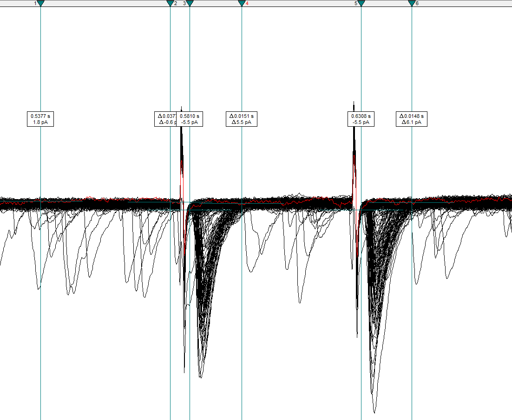

Evoked Current Analysis
Source:vignettes/articles/evoked-current-analysis.Rmd
evoked-current-analysis.RmdBefore using patchclampplotteR, you will need to prepare
your raw recording data from Clampfit. This article will show you how to
move your evoked post-synaptic current data from raw .abf recordings to
a .csv file.
This recording uses a protocol with two stimuli resulting in two evoked currents per sweep. The paired-pulse ratio (PPR) is the ratio of the second evoked current amplitude to the first.
This drawing shows the first and second evoked currents. The ratio between them is the paired-pulse ratio (PPR)
Combine recordings
Note The data from our lab is not a continuous 30-minute recording. We pause the recording every 5 minutes to obtain parameters like access resistance and capacitance from the membrane test before resuming recording. If your data is already a continuous file, you can skip steps 1-2.
Open the first .abf file in your recording series, and use the
Next Filebutton to quickly open all files in the series.Click on
Analyze->Concatenate Filesand select all files that belong to a recording from a single cell. All the recordings will be combined into a continuous recording with no gaps.

Create data sheet
- Create a .csv file with four columns:
Letter,ID,P1,P2.
-
LetterThe unique letter identifier of a single cell. -
IDA character value indicating the recording number. This corresponds to theFile Namecolumn that is automatically generated in the Results sheet in Clampfit. See below for a warning about what you should put here. -
P1The amplitude of the first evoked current. -
P2The amplitude of the second evoked current.
Note I would strongly recommend using the filename of the first file in the series (but write down the concatenated filename in your lab book as well). This is because Clampfit will auto-generate the concatenated file names (
Concatenate001.abf,Concatenate002.abf, etc.). If you update your pClamp software, Clampfit will begin naming files again atConcatenate000.abf, and you could lose track of which file is which.
View recording
Click on the
Show Aquistion Signalsbutton and thenPrevious Signal(blue arrow in the figure below) to view the sweeps showing changes in current (Im_primary). The traces should all be stacked on top of each other, but if they are not, click onView->Data Display->Sweeps.You can also click on the
Auto Scale All Y Axesbutton (orange arrow) to help you see the data faster.

Set up cursors
You will only need to set this up once per computer. Double-click anywhere in a blank region on the graph to open the
Analysis Window Propertiesbox.In
Cursor Options, increase the number of cursor pairs to 3. These 3 pairs will be used to set the baseline, first evoked current, and second evoked current.Position Cursors 1 and 2 before the first stimulus artifact. Cursors 3 and 4 should surround the first evoked current, and Cursors 5 and 6 should surround the second evoked current.

Warning! Ensure that the cursors fully enclose the evoked currents and that they do NOT include the stimulus artifacts.
- Click on
View->Window DefaultsandSave selected Analysis Windows settings as default. This will save you time when running through many analyses since it will restore your cursor pairs to the same position with new files!
Get current amplitudes
Click on the Statistics button (a small icon with a summation symbol on top of it) or press
Alt+s.Set the following settings:
- Trace Selection: Choose
Im_primary ()andSelect Alltraces. If you want to exclude specific traces, click on these traces, then selectInvertto choose all traces except the ones you excluded. - Peak Polarity:
Im_primary,Negative-going - Baseline Region: Mean level
Cursors 1..2 - Search Region 1: Range:
Cursors 3..4 - Search Region 2 (click the up arrow next to the number and click the
checkbox to enable a second search region): Range:
Cursors 5..6 - Destination Option:
Replace results in sheet(prevents you from accidentally copying old data) - Column Order:
Measurement, Region, Signal - Measurements:
Peak_amplitude
Warning! Ensure that you have selected all traces that you want to include in the recording! You can verify if this is the correct number by checking the total number of sweeps in the bottom-right corner. For example, if you have 360 sweeps and you want to include all sweeps, the trace selection should show
t1..360.
Warning! Check that all the settings are correct, especially if you have done other analyses in Clampfit recently. For example, the polarity may be set to
Positive-going, and you may have incorrect search regions specified if you were recently analyzing action potential data.
Warning! The Measurements options change for each search region, so make sure that both search regions ONLY have
Peak_amplitudechecked!
Click OK and view the
Resultssheet (Window->Results1orAlt+w+2). Copy the R1S1 and R2S1 columns, which correspond to the first and second evoked currents, respectively.Paste these values into the
P1andP2columns.Fill in the
LetterandIDcolumns. In Excel, you can just fill the first values, then double-click the cell in the bottom right corner to automatically fill the entire column. The final dataset should look something like the following table.
You are finished with the analysis in Clampfit!
Cell Characteristics
Create a new .csv file. This will eventually become a large spreadsheet with information on all recordings in your entire dataset. As you add new recordings, update this cell characteristics sheet. Please see the Required columns section of the documentation for
import_cell_characteristics_df()for explanations of the required columns and what they include.After you have completed these steps for several recordings, you should have two .csv files:
- A .csv file with the evoked current amplitudes (
P1andP2) - A .csv file containing information on the cell characteristics
If you have these two files, you are ready to begin using
patchclampplotteR! See the Getting
Started vignette to learn how to combine this data and use it with
patchclampplotteR.
FAQ
There are some noisy traces or traces with strange artifacts.
You can exclude individual traces (for example ones with lots of
noise or a very unstable baseline) in the Trace Selection box of Step
11. Select the traces you want to exclude, then Invert your
selection.
What does it mean when there are two currents close together?
If you see two peaks instead of one expected evoked current, this could be an example of multivesicular release. Make a note of this, since the treatment could lead to changes in synaptic activity through this interesting mechanism.
I have some new recordings. Do I add them to my existing .csv files, or make new files?
You should save a new .csv file for each new batch of raw data (these
are the .csv files with Letter, ID,
P1 and P2). You may find it efficient to wait
until you have a week of recordings, then analyze these recordings all
at once in Clampfit. These data will be in a .csv file named something
like 20240708-eEPSC-data.csv.
However, when writing a paper or thesis, you will use just one master
csv file which contains the evoked current data for all recordings in
the entire project. To append new data to this master csv, use the
add_new_cells() function. Please see
vignette("patchclampplotteR") for more details.
I am seeing twice as many data columns than I expected
(e.g. R1S1, R1S2, R2S1 and
R2S2)
The R stands for Region and the
S stands for Signal. If you see more than one
S (for example, R1S1 and R1S2)
this indicates that you have selected both signals (Im_primary AND
Vm_primary). In the Statistics dialog box
(Alt + s) click on Trace Selection and ensure
that only one signal is selected. Sometimes this is accidentally
switched to All visible signals which is incorrect.
If you see multiple R columns, it may indicate that you
have extra search regions enabled. If you only want one search region,
double-check that Search Region 2 isn’t accidentally checked. Click the
up arrow next to the number box and ensure that the box next to Search
Region 2 is unchecked.
I want to analyze both evoked currents at the same time, but I am
only seeing one data column (R1S1). This is the
opposite of the issue above. This time, you do not have enough Search
Regions enabled. In the Statistics dialog box
(Alt + s) click the up arrow next to the number box and
ensure that Search Region 2 is enabled.